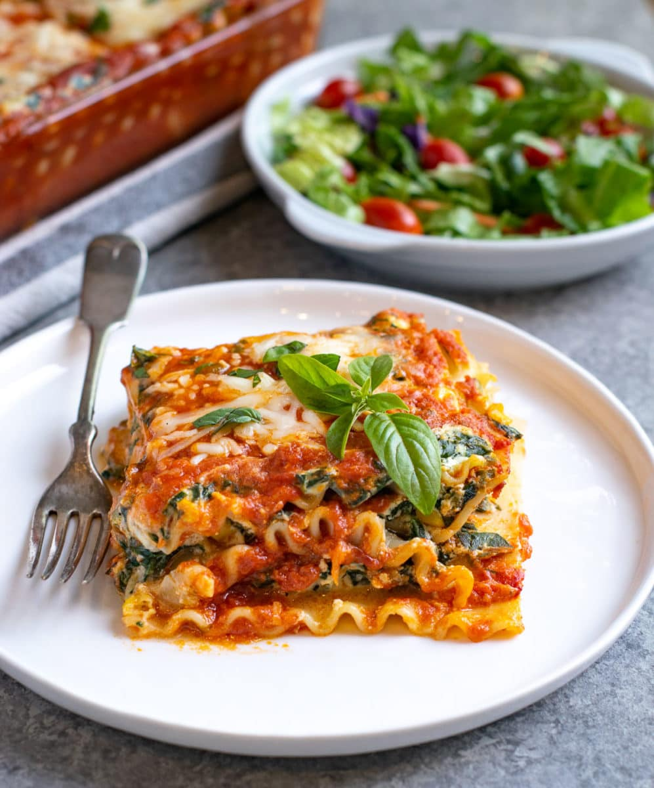

Vegetarian lasagne

Description
Make our easy vegetable lasagne using just a few ingredients.
Ingredients
These are the ingredients you’ll need to make this vegetable lasagne:
- Lasagne sheets: 300g lasagne sheets
- Red peppers: 3 red peppers, cut into large chunks
- Aubergines: 2 aubergines, cut into ½ cm thick slices
- Olive oil: 8 tbsp olive oil, plus extra for the dish
- Mozzarella: 125g mozzarella
- Cherry tomatoes: handful cherry tomatoes, halved
Steps
- Heat the oven to 200C/180C fan/gas 6.
- Lightly oil two large baking trays and add the peppers and aubergines.
- Toss with the olive oil, season well, then roast for 25 mins until lightly browned.
- Reduce the oven to 180C/160C fan/gas 4. Lightly oil a 30 x 20cm ovenproof dish.
- Arrange a layer of the vegetables on the bottom, then pour over a third of the tomato sauce.
Top with a layer of lasagne sheets, then drizzle over a quarter of the white sauce.
Repeat until you have three layers of pasta.
- Spoon the remaining white sauce over the pasta, making sure the whole surface is covered,
then scatter over the mozzarella and cherry tomatoes. Bake for 45 mins until bubbling and golden.